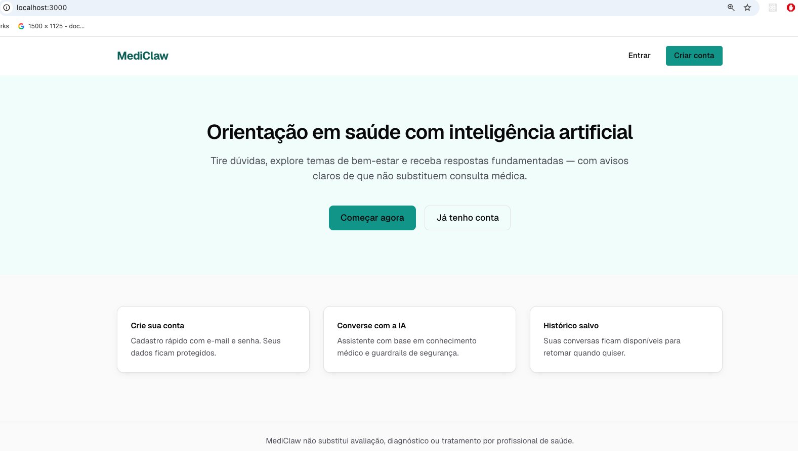
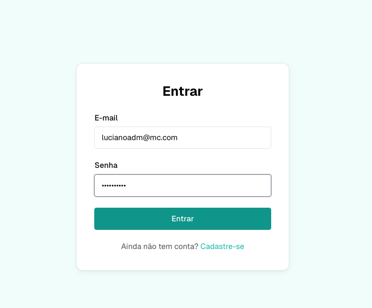
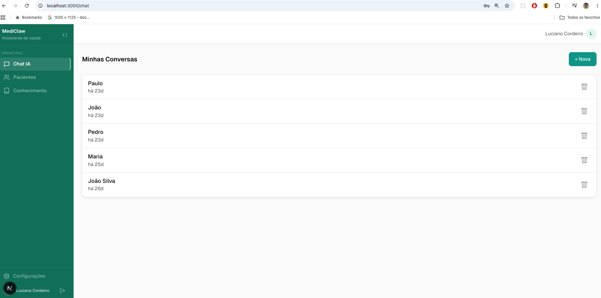
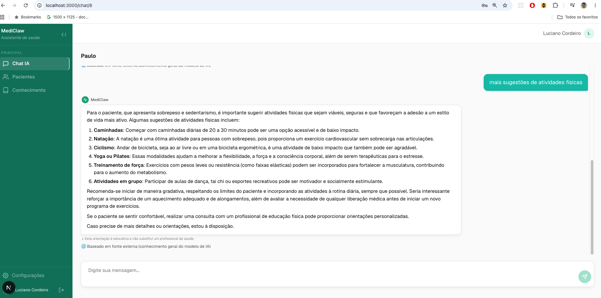

Assistente Inteligente de Apoio à Longevidade e Bem-Estar
Disciplina: Construção de APIs para Inteligência Artificial
Três forças que impedem a evidência de chegar à consulta
Dados de exames, sinais vitais e hábitos são técnicos, fragmentados e impossíveis de integrar no tempo da consulta.
Orientações genéricas ignoram comorbidades, contexto de vida e individualidade biológica do paciente atendido.
Consultoria especializada tem barreira de custo e geografia, sobretudo fora de grandes centros urbanos.
Plataforma web de apoio à decisão clínica com LLM + RAG
Médico descreve o paciente em linguagem natural durante a consulta
Sem formulários. O assistente extrai dados automaticamente da conversa.
IA retorna hipóteses diferenciais com embasamento em evidências indexadas
RAG busca na base de conhecimento proprietária antes de chamar o LLM.
Dados biométricos capturados e persistidos automaticamente
Peso, sono, atividade e nutrição extraídos via regex + LLM da conversa.
A decisão e a responsabilidade são sempre do médico assistente
Disclaimer obrigatório em toda resposta. Guardrails bloqueiam diagnóstico e prescrição.
Por que mudamos de direção no meio do caminho
Proposta original
O que entregamos
localhost:3000 — sistema em execução local




Identidade visual do próprio MediClaw: verde ciano, fundo claro, sidebar de navegação estruturada
Veja a arquitetura, os 137 testes e o pipeline de IA no repositório público
Next.js 16 · Django 5.2 · PostgreSQL 16 + ChromaDB · OpenAI / Gemini
7 etapas em milissegundos — do input do médico à resposta verificada
Guardrails pré e pós-LLM: TP=100%, FP=0% em 33 prompts de avaliação · Custo zero (sem chamada de API)
Guardrails bloqueiam antes do LLM. RAG fundamenta depois.
determinísticos, em português
Retrieval-Augmented Generation
A responsabilidade clínica permanece sempre com o médico assistente
Access 30 min · Refresh 1 dia · Bearer header
Cada médico acessa só seus pacientes via doctor=request.user
Usuário 60/min · Chat 10 msg/min
Origens explícitas em CORS_ALLOWED_ORIGINS — sem curinga
Obrigatório e deduplicado em toda resposta clínica da IA
Aceite de termos obrigatório no cadastro · accepted_terms_at
Cobertura de guardrails a autenticação, do backend ao frontend
137 testes backend com pytest + PostgreSQL 16 real
Não SQLite. O CI roda contra banco real para garantir fidelidade ao ambiente de produção.
~40 testes frontend com Vitest + Testing Library
Formulários de auth, componentes de chat, SSE, disclaimer e contexto de autenticação.
22 testes de guardrails: urgência, diagnóstico, prescrição, gibberish, output LLM
Eval set com 33 prompts: TP=100%, FP=0%.
CI GitLab: lint (Black) + suite completa em cada push
Pre-commit hooks com Black. Conventional Commits no histórico.
Swagger UI + ReDoc integrados — documentação interativa em /swagger/
Gerado via drf-yasg. PRD e ADRs em specs/.
Toda a documentação segue o padrão BMAD (Business, Model, Architecture, Data), garantindo contexto completo para desenvolvedores e agentes de IA.
Requisitos de produto e regras de negócio
10 ADRs com decisões arquiteturais documentadas
Contexto para agentes de IA e desenvolvedores
Épicos e tarefas de implementação sequenciais
Padrão Provider — Alternância de Modelos
Troca de provedor sem nenhuma mudança de código — interface LLMProvider em providers/base.py
Avaliação critério a critério — todos os requisitos da disciplina atendidos
4 endpoints distintos + streaming SSE
4 camadas: serializer, guardrail, MIME, limite
Envelope {data, error, meta} padronizado
structlog JSON; audit stub documentado
JWT + rate limiting + CORS + multi-tenancy
/api/v1/ + CI GitLab em cada push
137 testes + Swagger + README + ADRs
README + .env.example + DevContainer
github.com/lacsousa/mediclaw-system
"O projeto demonstra domínio avançado dos conceitos da disciplina." — avaliação técnica
Em todos os critérios, o MediClaw vai além do mínimo exigido
| Critério | Mínimo exigido | MediClaw |
|---|---|---|
| Endpoints com IA | ≥ 2 | 4 endpoints distintos + streaming SSE |
| Testes automatizados | Não especificado | 177 (137 backend + ~40 frontend) |
| Segurança | JWT | JWT + rate limiting + CORS + multi-tenancy + guardrails |
| Documentação | README | Swagger + ReDoc + PRD + ADRs + BMAD |
| Validação de dados | Básica | 4 camadas: serializer, guardrail, MIME, limite |
| Tratamento de erros | Básico | Envelope padronizado + erros SSE sem quebrar stream |
| Endpoint | Tipo | Pipeline |
|---|---|---|
| POST /api/v1/conversations/{id}/messages/ | Síncrono | Guardrail → Skills → RAG → LLM → Guardrail saída |
| GET /api/v1/conversations/{id}/stream/ | Streaming SSE |
Mesmo pipeline, token a token via EventSource |
| POST /api/v1/admin/knowledge/upload/ | Ingestão RAG | Embeddings + indexação ChromaDB (PDF/TXT/MD ≤ 10MB) |
| GET /api/v1/health/summary/ | Skill IA | Agregação biométrica 7d + análise por IA |
* Todos os endpoints com autenticação JWT Bearer + rate limiting DRF
a equipe
Adriano
Soares
Júlio César
Pires
Luciano
Cordeiro
Mara
Pereira
Pedro
Diehl
"MediClaw não substitui avaliação, diagnóstico ou tratamento por profissional habilitado."
Feito com Mira · 2026